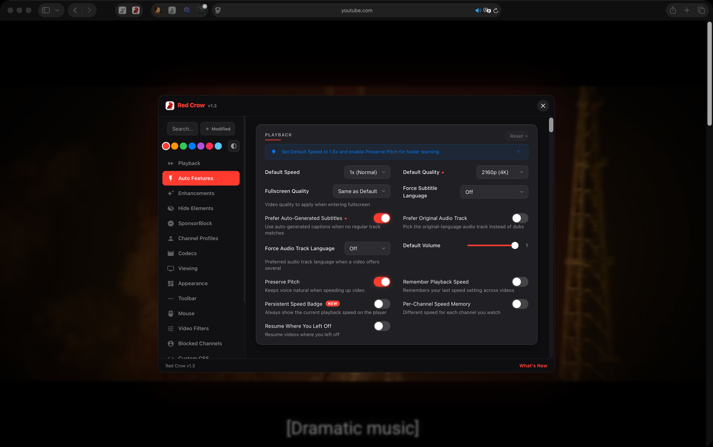
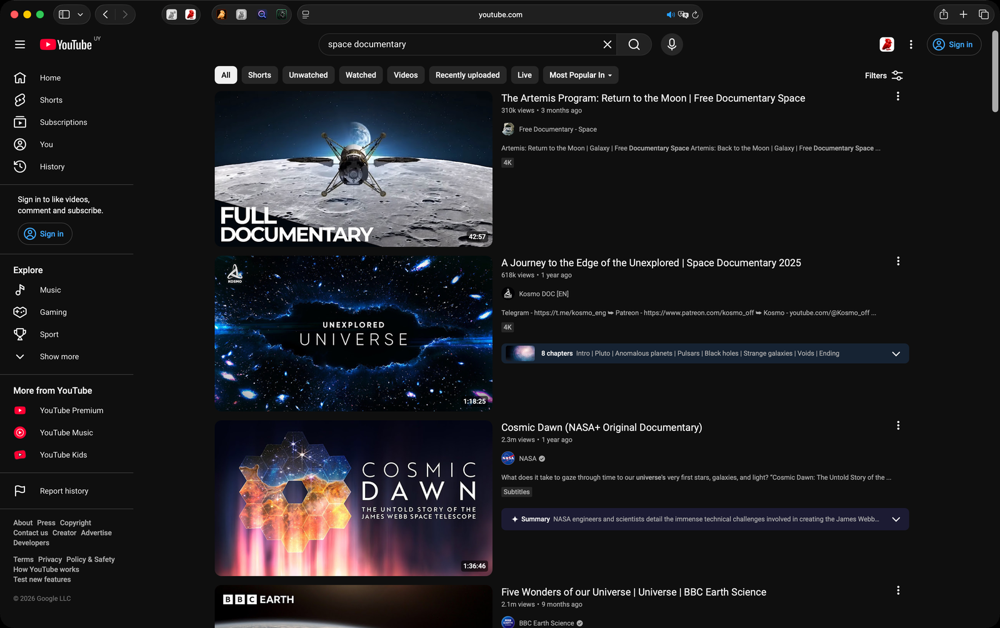
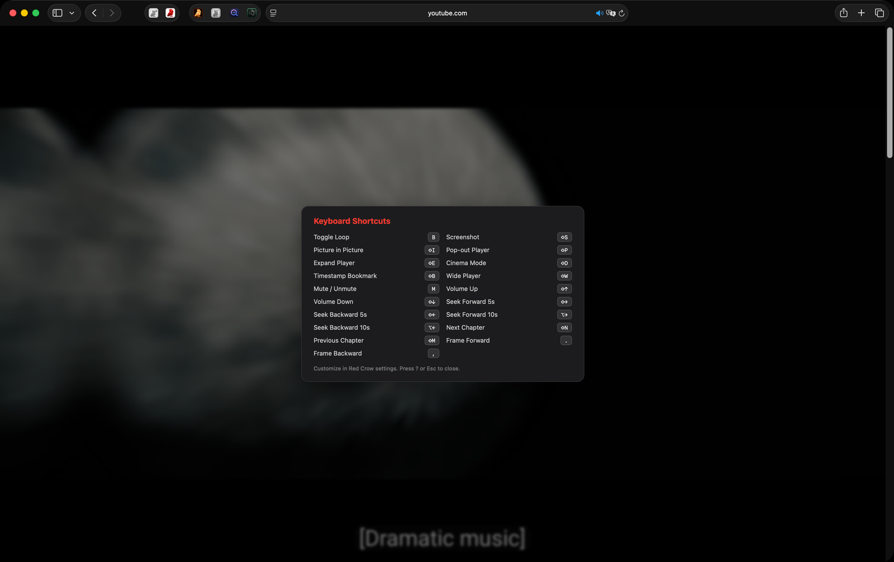
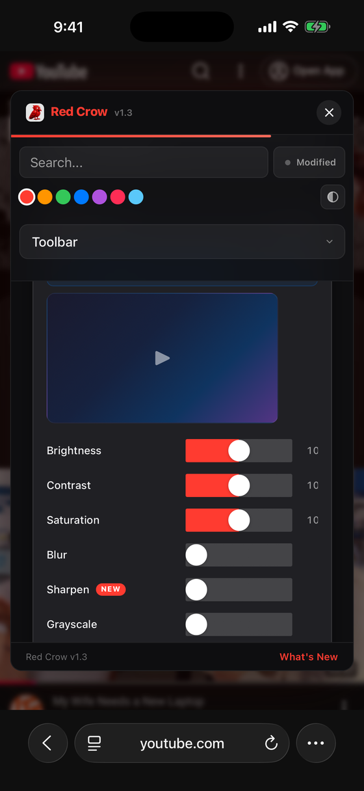

Red Crow
for Safari
Hide Shorts completely, skip sponsors, and take control of playback with more than 150 settings. A native Safari extension for macOS, iOS, and iPadOS.
iOS 18.0+ · macOS 15.0+Hide Shorts completely, skip sponsors, and take control of playback with more than 150 settings. A native Safari extension for macOS, iOS, and iPadOS.
iOS 18.0+ · macOS 15.0+



Set a default playback speed, create per-channel speed profiles, and remember your preferred speed across sessions.
19 toolbar buttons: screenshot, loop, Picture-in-Picture, cinema mode, pop-out player, rotate, flip, and more.
Automatically skip sponsors, intros, outros, self-promotion, and filler segments. Powered by the community SponsorBlock API.
Remove Shorts from the sidebar, the Shorts tab, home shelves and search, or open them in the normal player instead. Comments, end cards, ads and other clutter too.
Restore dislike counts and the like/dislike ratio bar. See the full picture before watching any video.
Replace clickbait titles and thumbnails with community-submitted alternatives. See what the video is actually about.
Customizable keyboard shortcuts for every feature. Control speed, seek, screenshot, toggle cinema mode, and more without touching the mouse.
Adjust brightness, contrast, saturation, blur, warmth, sepia, and more in real time. Fine-tune every video to your liking.
Set time limits with customizable alerts to manage your screen time. Stay in control of how long you spend on YouTube.
Download Red Crow from the App Store. Available on Mac, iPhone, and iPad.
Open Safari Settings, go to Extensions, and enable Red Crow. Grant permission for youtube.com.
Open YouTube in Safari and enjoy an enhanced experience. Configure settings from the extension popup.
Every feature is configurable. Enable only what you need, adjust thresholds, pick your preferred behavior. Your YouTube, your rules.
No accounts, no tracking, no data collection. Your settings stay on your device. Red Crow never phones home.
Not a Chrome extension ported to Safari. Red Crow is built specifically for Safari with native performance and zero background processes.
Requires macOS 15.0 (Sequoia) or later, or iOS/iPadOS 18.0 or later. Works with Safari 18+.